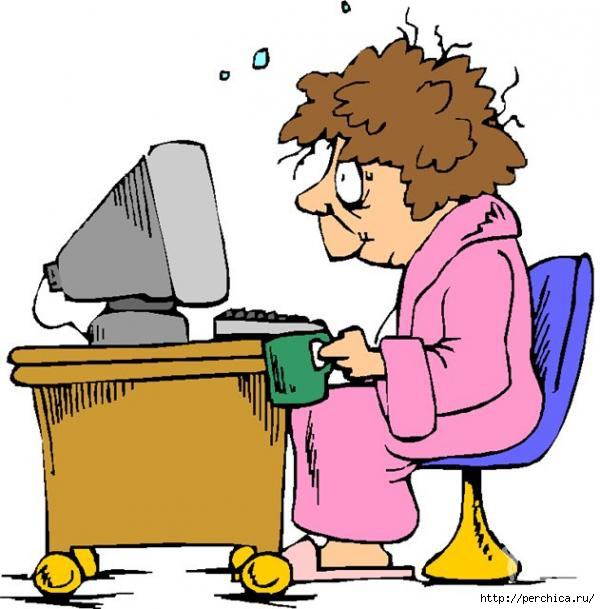

Работа с рисунками в HTML
 ля создания рисунков можно использовать любой графический редактор (Paint, Adobe Potoshop и др.)
ля создания рисунков можно использовать любой графический редактор (Paint, Adobe Potoshop и др.)
Существуют негласные ограничения использования рисунков:
- страничка не должна быть перегружена графическими изображениями,
так как это может весить сотни килобайт, что замедляет загрузку странички в браузере;
-
не нужно злоупотреблять анимированными картинками (*.gif), так как они
отвлекают внимание от содержания странички;
- не нужно размещать на страничке картинку очень большого размера.
Это также затруднит загрузку странички.